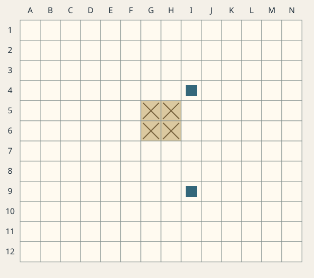

Одинаковые правила, разная история
Все карты совпадают с сеткой нативного пакета: 14 × 12, клетка — 5 футов. G5/H5/G6/H6 — трудная местность; I4/I9 — половинное укрытие. Остальные детали описания декоративны, пока ведущий не изменил поле штатно.
Расстановка и параметры
Герои по порядку: B3, B4, B5, B6, C3, C4, C5. Противники: L3, L4, L5, L6, M3. Используйте только нужное число фигур.
Для 3 / 4 / 5 / 6 / 7 игроков: 2 / 3 / 3 / 4 / 5 противников, здоровье каждого 12 / 14 / 16 / 18 / 20. Защита 12; скорость 20 футов; одна ближняя атака +3, 1d4+1 дробящего урона, досягаемость 5 футов.
Враги — простая поддерживаемая модель. Мирные решения и ограничения сцены описаны отдельно; ведущий подтверждает их результат. После первого раунда напомните пути переговоров или отступления. Встречи не запускаются автоматически.
Парад слишком усердных тележек
Только если герои выбирают короткую галерею и после объяснения вариантов хотят разыграть противодействие сортировщиков как столкновение; ведущий отдельно начинает встречу.
Цель и выходы
Перенести праздничную почту на выход галереи, сохранив читаемые адреса. Можно отступить к началу и уйти прогулочной петлёй; письма не исчезают, но скоростная отметка будет ниже.
Орен выдаёт ярлыки получателей по обычной просьбе. Если герои разносят ярлыки по трём видимым стойкам, тележки спокойно распределяются; это сцена доставки без броска. Можно сразу выбрать длинную петлю и сохранить бережность.
Поведение противников
Фантастический почтовый автомат с мягкими бортами и огромным бумажным бантом. Обычная атака описывается как толчок бортом; никаких новых состояний или реальных инструкций по технике.
Тележки занимают удобные проходы к сортировочной площадке и приближаются к ближайшему курьеру. При 0 хитов автомат замирает до обслуживания. Они не преследуют за пределами галереи и не уничтожают почту.
Размер группы
3 игрока: 2 тележки, 12 хитов каждая; 4: 3 по 14 хитов; 5: 3 по 16 хитов; 6: 4 по 18 хитов; 7: 5 по 20 хитов. У всех КД 12, одна ближняя атака +3, урон 1d4+1. Новых волн нет; при 6–7 дайте двум группам отдельные посылки, а общую проверку адресов проведите на выходе.

↔ На узком экране прокрутите карту вбок. Полный размер доступен по ссылке ниже.

Поле 14×12. Герои занимают B3, B4, B5, B6, C3, C4, C5 по числу участников; противники — L3, L4, L5, L6, M3 по размеру встречи. Только G5, H5, G6, H6 — трудная местность: мягкие почтовые мешки. Только I4 и I9 дают половинное укрытие: закрытые сортировочные стойки. Бумажные банты и остальные полки — декорации без дополнительных правил; выход обозначен у восточного края.
Лепестковые билетёры
Только при добровольной попытке вынести выставочные пластинки через старый парадный проход до регистрации ярлыков, если игроки хотят тактическую сцену. Простое посещение встречи не вызывает.
Цель и выходы
Донести выбранные копии до приёмного стола. Герои вправе положить их на стол и отступить в читальный зал; тогда Искра оформит выдачу обычным порядком, а быстрой музейной печати не будет.
Попросить Искру выдать посетительские ярлыки и записать, что вывозятся копии. Билетёры пропускают группу без проверки навыка. Можно сделать зарисовки на месте и вообще не переносить пластинки; журнал при этом остаётся доступным.
Поведение противников
Выставочный автомат с бумажным воротником и округлыми фантастическими манипуляторами. Его обычные атаки выглядят как неуклюжие попытки вернуть посетителя в очередь.
Билетёры расходятся между столом и парадным выходом, двигаются к ближайшему переносчику и используют только обычную ближнюю атаку. При 0 хитов складываются в неподвижный бутон. Стекло и личные письма не выбираются целями.
Размер группы
3 игрока: 2 билетёра по 12 хитов; 4: 3 по 14 хитов; 5: 3 по 16 хитов; 6: 4 по 18 хитов; 7: 5 по 20 хитов. Всегда КД 12, одна ближняя атака +3 на 1d4+1. При большом составе поручите части героев подписи и упаковку; эти действия не требуют добавочного боя.
↔ На узком экране прокрутите карту вбок. Полный размер доступен по ссылке ниже.

Поле 14×12. Герои занимают B3, B4, B5, B6, C3, C4, C5 по числу участников; противники — L3, L4, L5, L6, M3 по размеру встречи. Только G5, H5, G6, H6 — трудная местность: складки выставочного занавеса. Только I4 и I9 дают половинное укрытие: закрытые витрины. Рисованные растения и остальные столы — декорации без дополнительных правил; приёмный стол обозначен у восточного края.
Флажки, которые решили финишировать
Группа выбирает короткую финишную площадку и сама решает остановить разъезжающие фестивальные автоматы тактическими действиями. Ведущий предлагает переговоры и обход до начала встречи.
Цель и выходы
Перенести письма и разрешённые выставочные предметы к столу встречной почты. Можно вернуться в павильон отдыха, переждать обычный рейс или использовать прогулочную петлю; никакая авария не заставляет сражаться.
Эн знает, где лежат правильные бумажные номера парада. Разложив номера у боковых стоек, герои дают бегунам понятные места; это договорённая с ведущим сцена без взлома и броска. Либо передайте груз обычному рейсу с точной описью, уступив скоростную ленту.
Поведение противников
Низкая платформа с нарисованными кроссовками и ворохом цветных флажков. Фантастический автомат путает любой груз с реквизитом парада.
Бегуны занимают площадку вокруг финишной стойки и подходят к ближайшему герою с грузом. Одна обычная атака выглядит как мягкое столкновение. При 0 хитов платформа останавливается, флажки остаются целы; за павильон автоматы не следуют.
Размер группы
3 игрока: 2 бегуна по 12 хитов; 4: 3 по 14 хитов; 5: 3 по 16 хитов; 6: 4 по 18 хитов; 7: 5 по 20 хитов. Каждый имеет КД 12 и одну ближнюю атаку +3 на 1d4+1. Не добавляйте подкрепления; дополнительные игроки получают отдельные письма и выбор порядка переноса.
↔ На узком экране прокрутите карту вбок. Полный размер доступен по ссылке ниже.

Поле 14×12. Герои занимают B3, B4, B5, B6, C3, C4, C5 по числу участников; противники — L3, L4, L5, L6, M3 по размеру встречи. Только G5, H5, G6, H6 — трудная местность: мягкие фестивальные ленты. Только I4 и I9 дают половинное укрытие: закрытые ящики реквизита. Флажки, бортики и плакаты — декорации без дополнительных правил; стол передачи обозначен у восточного края.